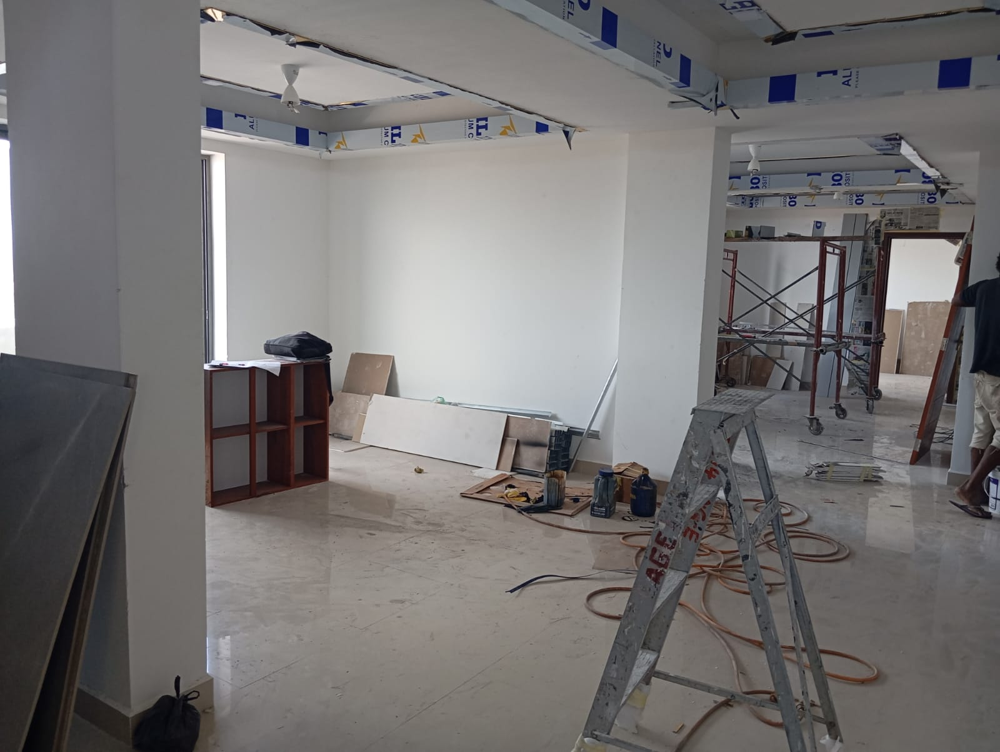

- 071 372 0667
- info@gauraconstruction.lk
A practical checklist to use during site visits, so nothing gets covered up before you've seen it.

Most construction defects are only expensive because they're discovered after they've been covered up by the next stage of work. Knowing what to look for - and when - lets you or your site supervisor catch problems while they're still cheap to fix.
Check that reinforcement bar sizes and spacing match the structural drawings, concrete has been properly cured, and damp-proofing is in place before the foundation is backfilled and hidden from view - this is your last chance to inspect it directly.
Inspect column and beam alignment, check that electrical conduits and plumbing pipes are correctly routed and not compromising structural integrity, and confirm brickwork or blockwork is level and properly bonded before plaster covers everything.
This is the single most important inspection point in the entire build. Once walls are plastered and painted, electrical wiring, plumbing lines, and conduit routing become invisible - and expensive to access again. Review our guide on MEP services explained for what proper rough-in should look like.
You can't inspect what's already been plastered over. Every stage has a window - and once it closes, you're trusting the work rather than verifying it. - Gaura Construction
Test all water pressure and drainage points, switch every electrical outlet and light fitting, check door and window alignment, inspect tile grouting and paint finish under good lighting, and confirm any built-in fixtures function as specified.
When civil, MEP, and interior work are handled by separate uncoordinated contractors, quality checks fall through the cracks between them. Our integrated construction teams use the same checklist internally at every stage, so issues get caught before they're built over - not after your final walk-through.
A good quality checklist isn't about distrust - it's about catching small issues while they're still a five-minute fix instead of a five-day one. Contact Gaura Construction if you'd like our site supervisors to walk you through your project's inspection points stage by stage.